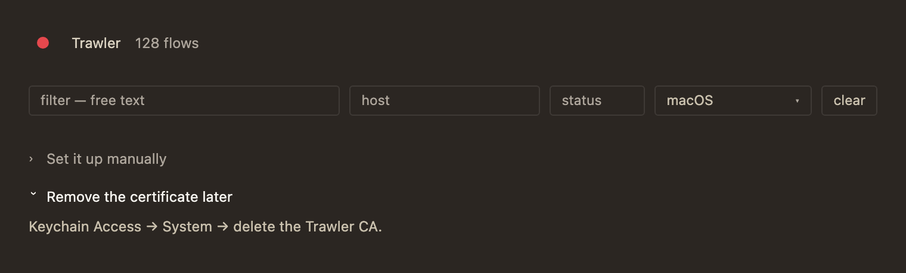
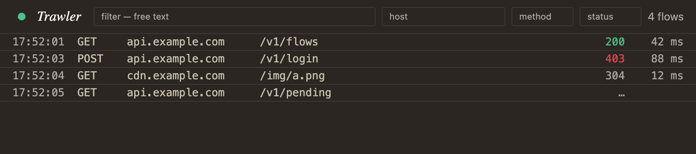

Outcome
Field (T1), StatusDot (T2) and Disclosure (T1) are in the collection, each carrying its design's TSDoc byte-for-byte as its only contract. The registry emits 27; KeyValueRow → Field and StatusPill → StatusDot are now checked edges rather than prose. The vocabulary gained the two members Disclosure's twist needed, verified in the emitted CSS. The three design files are gone, their forks distilled to DEC-30.
Field and StatusDot to the barrel collided with the legacy ui/src/components.tsx, and every screen imports the bare ./components, which resolves to the file rather than the directory's index. The WU's own deliverable was unreachable from the running app. The owner's call was to migrate the call sites and delete the legacy kit rather than respell one import — so three screens changed, the e2e ran instead of being waived, and work the epic had assigned to W4 and W11 landed here. The full account is below.
| # | Expected | Result |
|---|---|---|
| 1 | Three components, full six-tag TSDoc carried verbatim | ✓ registry emits 27; each tag byte-compared against its design's compile block — all three identical |
| 2 | Exported from index.ts, mounting standalone | ✓ barrel-matches-roster and specimen-per-name both green |
| 3 | The phantom redirects resolve | ✓ KeyValueRow: CopyText,Field · StatusPill: StatusDot,TonedText — plus Section: Disclosure, see deviation D3 |
| 4 | The three W1 defects gone in the built components | ✓ one test each, all three re-verified by measurement in a real browser (below) |
| 5 | rotate / transition-transform legal vocabulary | ✓ two named members; lint silent; confirmed in the built CSS, not only the config |
| 6 | Design files gone, forks distilled, index reachable | ✓ DEC-30 added, index row added, three files deleted in one commit with the record |
| 7 | A design.implements citation — the repo's first | ✓ three of them, {path, blob, built}, resolving through history per DEC-28. See the probe |
| 8 | Zero change to any screen | ✗ superseded — held until the review found the components were unreachable from the app. Three screens migrated; see the review |
| 9 | (added by the review) the components the WU built are the ones the app actually renders | ✓ verified in the built bundle: the registry Field's class string is present and the legacy px-3 py-chrome-y input is gone; 10/10 e2e specs pass on the migrated screens |
What it actually looks like
Rendered by Vite from the real components — the app's own config, the app's own CSS — and measured in the same page rather than asserted in jsdom. The scaffolding was removed after the reading.

F2 · Field's box is Select's box
Field h=25.25 pad=3px/9px r=3px b=1px #3f3a36 font=11.5px
Select h=25.25 pad=3px/9px r=3px b=1px #3f3a36 font=11.5px
Identical on all six. The legacy input was px-3 py-chrome-y — 12px/4px against the trigger's 9px/3px.
S3 · the target is the button, not the disc
dotBtn 24 × 24
disc 10 × 10
The shipped version's target was the disc — 14px under the app's own floor, on the one control that must never be hard to hit.
S4 · it has a name, not just a title
aria-label = "Not capturing yet — click to set up"
The shipped button carried only title and announced as "button".
D2 · one glyph, rotated exactly 90°
closed matrix(1, 0, 0, 1, 0, 0)
open matrix(0, 1, -1, 0, 0, 0)
The vocabulary gap was the real risk here: an undeclared scale resolves to nothing silently. It resolves.
The summary lifts on open
closed rgb(174, 166, 156) — ink-mute
open rgb(247, 245, 240) — ink
The app's standard two-step "this is pressable" channel, since zero-accent leaves no colour for it.
The probe — the repo's first design.implements citation
The epic plan named W4 as the probe for this path, on the grounds that no such citation has ever existed. It came due here instead: W2 builds components, so W2 is where the gate first demands one. The plan flagged the wrinkle — the citation names design files this same WU deletes.
components·unretired forces DEC-16's retirement inside the build WU, before its tip, so DEC-25's 'resolve at the tip' left a cr/v3 build with no legal note." That sentence describes this WU, written before it ran. No finding for the gate.
DEC-29's other half also behaved as specified: design-scope lists no design artifact to judge, because these three were retired at the bytes W1 judged them at — amended-then-retired is a seam artifact, unchanged-then-retired is not. What the gate does demand is the three citations plus an answer for Section.tsx, which is the one rendered file this WU touched.
The review — one real finding, and what it cost
Five finders, four verifiers. Four candidate findings were refuted; one was confirmed and is the reason this WU's shape changed.
./components, and ui/src/components.tsx sat beside the ui/src/components/ directory — bundlers resolve the file over the directory's index. Adding Field and StatusDot to the barrel is what turned a dormant path into a name collision, and the app kept getting the legacy pair.
Not pre-existing. At BASE the barrel exported neither name, so ./components had exactly one source for them. This diff manufactured the collision and then lost to it.
Silent by construction. Both specifiers are valid, so tsc compiled it without a word and every one of the 529 unit tests passed — they import ./Field and ./index directly, which is precisely the path the app does not take.
Grepped in dist/assets/index-*.js | Before the fix | After |
|---|---|---|
legacy Field's px-3 py-chrome-y | present | gone |
registry Field's …bg-canvas px-control-x | absent | present |
w-glyph (Disclosure), min-h-control | absent | present |
The regression test is the general form, not the instance — no screen may import through the ambiguous bare specifier. It listed all three offenders before the fix, and would catch the spelling coming back in any future WU.
The fix, and the scope it took
Respelling the four imports would have silenced this instance and left the ambiguity for the next one. The owner chose to remove it at the root:
| Change | Effect |
|---|---|
App.tsx → registry Field + StatusDot | Props already matched, so this is an import swap. The header gains the 24px hit target and the accessible name that W1 found missing. |
FlowList / FlowDetail → registry StatusPill | The one real prop-shape change: the raw number | null instead of a tone resolved at the call site. Statuses now carry their reason phrase — 403 announces "403 Forbidden" rather than a naked number, the third defect the epic plan named. |
FlowRow drops tone and its formatted status | toRow carries the raw status and StatusPill owns the mapping — DEC-20, and exactly what the epic's W4 row describes. |
ui/src/components.tsx + its test deleted | The collision cannot recur, and one of the three tone maps is gone — TONE_CLASS. Two remain: TonedText's, which is the registry's one legitimate owner, and the inline literal at Onboarding.tsx:360, which the epic plan calls "the third copy" and assigns to W10. |

The migrated screens, rendered from the real components. The status column is the visible change: StatusPill derives the tone and the reason phrase from the raw status, where the legacy pill was handed a pre-resolved tone and had no phrase at all.
StatusPill removal; W11 owned deleting the kit. Both were to follow W3's design run on the flow list and shell. That ordering is now broken for these four files.
What limits the damage: the screens' layout is untouched — same markup, same grid, same testids; only which component renders each cell changed. W3 still designs the flow list and shell against the same surface it would have, and its Elements stage now resolves those cells to entries that are already wired rather than proposing the wiring. What W3 has lost is the chance to decide these cells before they were decided.
Recorded as the owner's call, made against the alternative of shipping a WU whose deliverable the app could not reach.
Refuted — four candidates that did not survive verification
| Claim | Why it failed |
|---|---|
Field should compose Button, per DEC-18, rather than repeat its class string | DEC-18's own canonical example is Select's trigger, which shares the box by matching class string — and Field renders an <input> where Button renders a <button>, so composition is not mechanically available. The design's F2 fork stages and settles exactly this. |
| Enforcing the box parity by a test repeats DEC-18's "prose is not a comparison" failure | Backwards: a machine-checked comparison is the antidote DEC-18 asks for. Prose was the disease. |
Disclosure should use Tailwind's group / group-open: instead of attribute selectors | Tested empirically: group is a hard design/vocabulary error under the closed-vocabulary lint, because a marker class emitting no CSS is indistinguishable from a typo. The proposed alternative fails CI. (Recorded as deviation D2 before the review raised it.) |
Two Fields and two StatusDots ship in one bundle | True when raised and resolved by the fix above — the legacy kit is deleted. |
Deviations
| Deviation | Why, and what it cost | |
|---|---|---|
| D1 | StatusDot's test hooks sit on the disc, not the button. | Re-read as not a deviation, and kept here because the first draft of this report called it one. The design's @anatomy reads "data-status carries the raw state for tests" as a standalone clause — unlike the clause before it, which says "the button's aria-label and title". The design does not say which element hosts the hook, so the build chose: the aria-hidden disc, because Button takes a fixed prop list and passes no arbitrary attributes through, and widening its API is not this WU's to do. Queryable by [data-status], and the accessible tree is unchanged either way. |
| D2 | Disclosure's open-state classes use an attribute selector, not group-open:. |
The natural Tailwind idiom is group + group-open:, and the vocabulary lint rejects group — correctly, since it is a marker class that emits no CSS and the rule cannot tell that apart from a typo. The design anticipated this and licensed the alternative in its own token table: "[&[open]>summary]:text-ink — or the equivalent state class the build picks". Built as [&[open]>summary>[data-twist]]:rotate-90 and [&[open]>summary]:text-ink on the <details>. Both verified in the emitted CSS. |
| D3 | Section's docstring was edited, which the design said was unnecessary. Disclosure's file states: "No edit to Section is needed — its @avoid line becomes true the moment this component exists." |
True of the meaning and false of the check. Redirects are derived by matching roster names in @avoid text, and Section said "put the disclosure inside the slot" — lowercase, so it matched nothing and the redirect stayed unverifiable even once Disclosure existed. That is the same phantom-redirect failure this epic exists to close, one level down: an instruction that reads as guidance and resolves to nothing a check can follow. Named it, and added the direction the design established — a Disclosure goes in a Section's slot, never a Section in a Disclosure's summary, which would hide a heading. This is the one rendered file the WU touched, and the reason design-scope reports a touched surface at all. |
| D4 | One unit test was rewritten after it failed. Field's B1 test read onChange.mock.calls[i][0].target.value and saw three empty strings. |
A test artifact, not a component defect: the input is controlled at value="", so React resets target.value before the stored event reference is read. Rewritten to capture the value inside the handler, at call time, and to re-render with each new value the way a real controlled parent does. Recorded because a test changed to make it pass deserves its reason on the record. |
| D5 | Disclosure's defaultOpen seeds per value, not per mount, and one test's name overstates what it checks. Raised by the review and confirmed empirically. |
React re-applies open whenever the defaultOpen value changes between renders — so a parent computing it from changing state can reopen a panel the user closed. The shipped test "seeds without binding — a re-render does not yank a closed panel back open" only exercises the unchanged-value case. Verified as a nit, not a defect: the design's driver ② explicitly wants ManualPanel's open={state === "failed"} to force the panel open when an action newly fails, which is the changing-value case working as intended; and Disclosure has no call site until W10, so no tenant can hit it. Left as-is rather than tightened, because W10 is the WU that acquires the tenant and is where the intended semantics get decided against a real screen — noted as a follow-up rather than guessed at now. |
Evidence
| Check | Result |
|---|---|
cd ui && pnpm test | 527 passed, 42 files. It rose to 529 with the three new suites, then settled at 527 when the legacy kit's three tests went with the kit and the review's regression test arrived. |
cargo xtask ui e2e | 10/10 specs pass — run, not waived, because the fix changed three screens. UC-4's live row and filter, UC-5's detail/JSON/raw/curl/brotli/image, and UC-ONBOARD's fresh launch through first decrypted flow all hold on the migrated screens. |
| The built bundle, before and after the fix | the finding's whole evidence: legacy px-3 py-chrome-y present → gone; registry px-control-x/min-h-control/w-glyph absent → present. Only the bundle could show this — unit tests import the components directly and never take the app's resolution path. |
pnpm exec eslint src | clean — the closed-vocabulary lint silent on all three, including the two new scale members |
pnpm build | green — tsc -b over the new props and the barrel's re-exports |
node scripts/design-registry.mjs | 27 entries; every @tier block carries all six tags or the oracle throws |
| Emitted CSS | rotate-90{--tw-rotate: 90deg;…} and [open]>summary>[data-twist] both present in dist/assets/index-*.css; transition-property:transform emitted. Checked in the output, because DEC-17's failure mode is a class that resolves to nothing without erroring. |
| TSDoc completeness (DEC-16 ②) | each of the six tags parsed out of both the design's compile block and the shipped TSDoc and compared — all three identical |
cargo xtask verify-doc | green on the plan, DEC-30 and the decisions index; components·unretired confirmed red on all three before retirement and gone after |
cargo test · cargo xtask gate0 | green — no Rust changed; run because the gate re-walks it |
cargo xtask ui specimens --check | green — every remaining design artifact still renders over file:// |
| Browser measurement | the five readings above, taken from computed style in headless Chrome against a Vite-served page built from the real components |
Distillation
| Doc | Tier | What landed |
|---|---|---|
| dec-30-the-three-gap-components.html | T2 | New. DEC-16 step ① for all three files: the shared registry-entry argument, Field's box (second confirmation of DEC-18), the DotStatus-is-not-StatusTone claim on its authority axis, the one-element pairing and the two defects it forces, native <details> over a div, the three refusals that belong to the host, and "reuse that produces a worse screen is a propose in disguise". Two forks recorded as spent. |
| decisions-index.html | T2 | The DEC-30 row, so the record is reachable index-first. |
| use-cases/web-ui.html | T2 | Nothing, and that is stated rather than assumed. No observable contract moved: the three components have no call site yet, so every screen renders exactly what it rendered before. UC-4's and UC-ONBOARD's wording is W4's and W10's to move if their builds move it. |
| design-rules-index.html | T2 | Not yet — deliberately. The chromatic-meanings row (StatusDot as a second owner of ok/warn, and ink-mute's first entry as the not-yet-known channel) is argued in DEC-30 and belongs in the rulebook, but the rulebook is frozen input for a design run and grows at distillation per DEC-14. Four screen runs (W3/W5/W7/W9) are still to run against it, and moving it mid-epic would change a substrate they pin. Carried to W11, where the epic's own distillation plan already reserves the row. |
| T1 | T1 | None. The flow, rulebook and gate are inputs to this epic. Nothing this WU found argues the method is wrong — DEC-28 and DEC-29 had already fixed the one edge it probed. |
Follow-ups
| What | Owner |
|---|---|
The rulebook's chromatic-meanings row — StatusDot as a second owner of ok/warn, ink-mute's first entry. Argued in DEC-30, held back so the four screen runs pin an unchanged substrate. | W11 (the epic's distillation plan reserves it) |
W3 designs a flow list whose cells are already wired. The fix migrated FlowList/FlowDetail/App ahead of W3's design run, so its Elements stage meets six row cells and four filter fields that resolve to registry entries in the code, not just in the roster. The layout is untouched, so the design surface is unchanged — but W3 should treat the existing wiring as a fact to judge, not a decision to inherit, and say so if it would have chosen differently. | W3 |
UC-4's observable gains landed early and are not yet written into web-ui.html. The fix made three of them true: statuses carry their reason phrase (403 announces "403 Forbidden"), the header dot has a 24px target, and it has an accessible name. These were W4's rows to state. Held back deliberately — W4 should state the UC row once, when the rest of its migration lands, rather than splitting one row across two WUs and turning the use-case doc into a changelog. | W4 |
W4's row is now partly spent. The registry StatusPill swap, the FlowRow.tone/status removal and the legacy-kit deletion all landed here. What remains for W4: TimestampText, MethodLabel, DurationText, Notice for the empty state, and FlowList.test.tsx. | W4 |
W11 no longer deletes the legacy kit — it is already gone. Gallery.tsx and its main.tsx guard remain W11's. | W11 |
Disclosure's defaultOpen semantics need deciding against a real tenant (deviation D5): seeding is per-value, not per-mount, and the test name is broader than the test. W10 is where ManualPanel arrives and the intended behaviour on a retry-then-refail becomes answerable. | W10 |
Disclosure has three waiting call sites and no consumer. Onboarding.tsx's ManualPanel and two raw <details> beside it still carry the browser's triangle. | W10 |
Whether Button should accept test hooks (deviation D1). Not an API change to make speculatively; the first build that genuinely needs data-* on a composed Button is the one that should argue it. | open — the WU that hits it |
group is unusable in this codebase (deviation D2). The lint cannot distinguish Tailwind's marker classes from typos, so every group-variant idiom must be written as an attribute selector. Worth a rulebook line if a second component hits it; one occurrence is not a pattern. | open — the second occurrence |